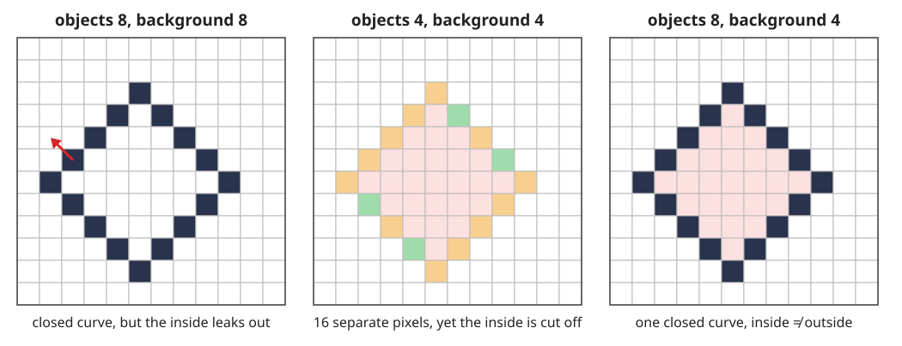
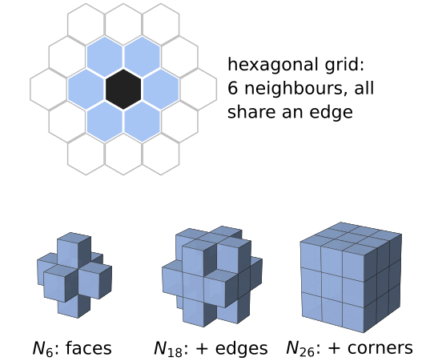
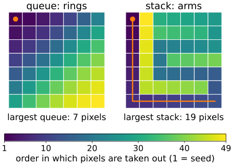
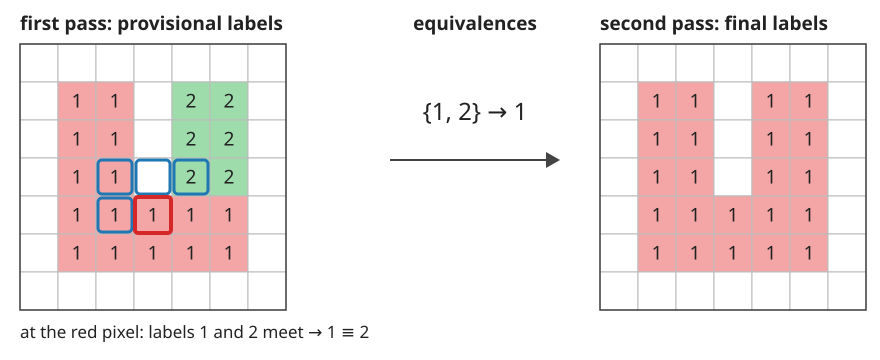
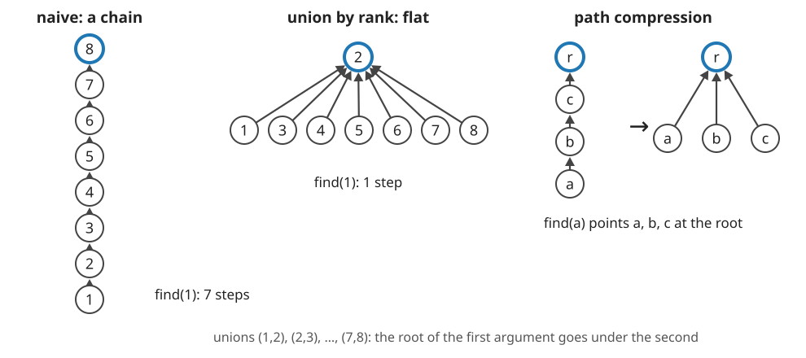

A thresholded image of nuclei is a mask of 0s and 1s. “How many nuclei are there, and how big is each?” The mask cannot answer: it does not know which pixel belongs to which object.
Neighbours, paths, components: what “connected” means on a grid, and why 4 and 8 give different counts.
The digital topology paradox: objects and background need complementary connectivities.
Flood fill with a queue or a stack.
The two-pass algorithm and the data structure behind it, union–find.
Cost: why all of this is (almost) linear in the number of pixels.
Slides titled The math give the formulas and proofs; the ideas are complete without them.
N_4(p): the 4 pixels sharing an edge with p; N_8(p): also the 4 sharing only a corner.
A path is a sequence of pixels, each a neighbour of the previous one. A set is connected if a path inside the set joins any two of its pixels.
A connected component is a maximal connected set: you cannot add a pixel without breaking connectedness.
Right: two blocks that touch at a corner are one object with 8-connectivity and two with 4-connectivity.
The math: components are equivalence classes
Write p \sim q if a path inside the foreground A joins p and q (with N_4 or N_8 fixed).
Reflexive (p \sim p, the path of length 0), symmetric (reverse the path), transitive (join two paths). So \sim is an equivalence relation.
Its classes are the components; they partitionA: every object pixel gets exactly one label.
A 4-path is also an 8-path, so every 4-component lies inside one 8-component: 8-connectivity never gives more objects than 4-connectivity.
As a graph: pixels of A are nodes, neighbouring pairs are edges; labelling = finding the connected components of this graph.
The digital topology paradox

A closed diagonal curve (dark pixels). In the plane, a closed curve has an inside and an outside (Jordan’s curve theorem).
8 / 8: the curve is one closed object, but the background leaks diagonally between its pixels: no inside.
4 / 4: the curve falls into 16 separate pixels, yet the inside is cut off: a “broken” curve that separates.
8 / 4 (or 4 / 8): one closed curve, and it separates. Foreground and background need complementary connectivities (Rosenfeld).
Try it: connectivity pairs
The convention, other grids and 3D
Course convention (also on the morphology, thresholding and watershed days): objects 8-connected, background 4-connected. A hole is a background component that does not reach the image border.
A hexagonal grid has no paradox: every neighbour shares an edge, so there is only one connectivity. Square grids are what cameras give us.
3D: N_6 (faces), N_{18} (+ edges), N_{26} (+ corners). Consistent pairs: (26, 6), (6, 26), and (18, 6). Labelling stacks of slices (voxel spacing, anisotropy) is the 3D unit 3D images of the marching-cubes day (day 47).
Euler number (next unit) and thinning (skeleton day) are only well defined with a consistent pair.

Dark: the centre pixel or voxel; blue: its neighbours.
Flood fill
From a seed pixel, grow its component: take a pixel from a list, add its unlabelled object neighbours to the list, repeat until the list is empty.
Queue (first in, first out): breadth-first, the region grows ring by ring, like the geodesic dilation of the morphology day (the component of p is the reconstruction of the mask from \{p\}).
Stack (last in, first out): depth-first, the region grows in long arms.
Recursion is a hidden stack: a recursive fill of a 1000 × 1000 object may nest 10^6 calls and overflow. Use an explicit list.
Labelling: scan the image; at every object pixel without a label, start a fill with a new label. Each pixel enters the list once: O(n), but with jumps through memory.

A 7 × 7 block, 4-connectivity, seed at the top left (demo preset “queue rings vs stack arms”).
Try it: flood fill
The two-pass algorithm

Rosenfeld & Pfaltz (1966). First pass, in raster order, at each object pixel look only at the neighbours already visited (8: up-left, up, up-right, left; 4: up, left):
none labelled → a new provisional label;
one label → copy it;
several labels → copy the smallest and record that they are equivalent.
Then resolve the equivalences into classes, number them 1, 2, 3, …, and in a second pass replace each provisional label by its class number.
Try it: two passes
Union–find
The equivalences form sets that keep merging: \{1, 2\}, then \{1, 2, 5\}, … A disjoint-set forest stores them:
each label points to a parent; a set is a tree, named by its root (parent[r] = r);
find(x): follow the parents to the root;
union(a, b): find both roots and hang one under the other.

Naively the trees can become chains (left): find costs up to n steps. Two fixes: union by rank (hang the shallower tree under the deeper one) and path compression (on the way up, point every visited node at the root).
The math: why union–find is nearly linear
Union by rank. The rank of a root is an upper bound on the height of its tree; ranks only grow when two equal ranks meet. A root of rank r has at least 2^r nodes (induction: rank r + 1 needs two trees of rank r, each with \ge 2^r nodes). So with n labels every tree has height \le \log_2 n, and each find costs O(\log n).
Path compression in addition: Tarjan (1975) showed that m operations on n elements cost O(m\,\alpha(n)), with \alpha the inverse Ackermann function. \alpha(n) \le 4 for any n that fits in a computer, so the cost is linear in practice. (Stated, not proved here.)
Halving (each node on the path points to its grandparent) gives the same bound with a single pass.
Try it: the forest
Runs, blocks, 3D, cost
method
memory access
cost
flood fill
random (queue/stack)
O(n)
two-pass + union–find
sequential, 2 scans
O(n\,\alpha(n))
run-based
sequential, per run
O(n + r\,\alpha(r)), r runs
Runs: label horizontal stretches of object pixels; a run joins the runs above that overlap it (diagonally too, for 8). Far fewer elements than pixels.
Block-based methods look at 2 × 2 blocks with a decision tree: the fastest in practice.
3D two-pass: 3 visited neighbours for 6-connectivity, 13 for 26. A large stack can hold more than 65 535 objects: label images need 32-bit integers.
Summary
A component is a maximal connected set; 4 vs 8 can change the count.
Objects and background need complementary connectivities (8/4 or 4/8; 26/6 in 3D), or closed curves stop separating.
Flood fill: queue (rings) or stack (arms), explicit list, O(n).
Two-pass: provisional labels, equivalences, second pass; the equivalences live in a union–find forest.
Union by rank + path compression: almost constant time per operation.
Every segmentation method of the course ends in a label image: the next units measure it.